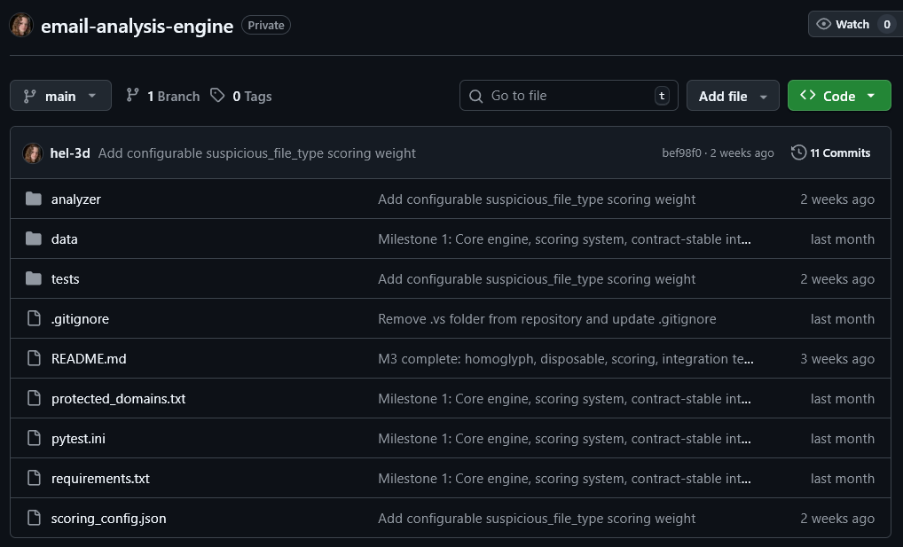
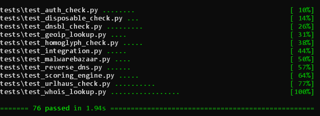
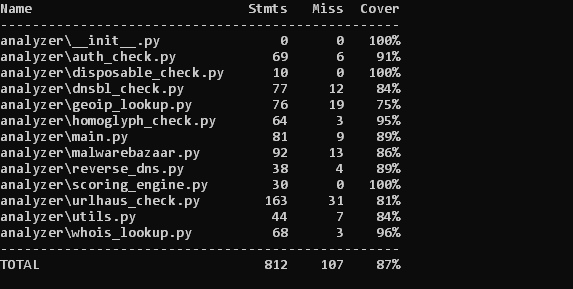
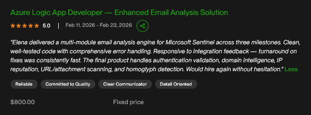

Email Analysis Engine for Microsoft Sentinel
This was a freelance client project delivered as a standalone Python analysis engine for a Microsoft Sentinel automation pipeline. It processes normalized incident data through modular detection and enrichment stages, producing a structured risk report with score, severity, flags, recommendation, and module-level results.
The analyzer was intentionally designed as Azure-agnostic business logic so the client team could embed it into an Azure Function and Logic App workflow without introducing cloud-specific dependencies into the core detection layer.
Outcome: validated end-to-end in the client’s Sentinel environment and deployed for automated incident email analysis.
Architecture
email-analysis-engine/
├── README.md
├── requirements.txt
├── scoring_config.json
├── protected_domains.txt
├── analyzer/
│ ├── main.py
│ ├── auth_check.py
│ ├── whois_lookup.py
│ ├── dnsbl_check.py
│ ├── geoip_lookup.py
│ ├── reverse_dns.py
│ ├── urlhaus_check.py
│ ├── malwarebazaar.py
│ ├── homoglyph_check.py
│ ├── disposable_check.py
│ ├── scoring_engine.py
│ └── utils.py
├── data/
│ └── disposable_domains.txt
└── tests/
├── fixtures/
├── module tests
└── integration tests
Modular Python architecture with isolated analysis components and a single analyze() entry point.

Private GitHub repository showing the modular structure of the analysis engine, including analyzer modules, test suite, and configuration files.
Overview
This project was built for a cybersecurity automation workflow around Microsoft Sentinel incidents. The client handled Azure Logic App and Sentinel integration, while I designed and implemented the standalone Python analysis engine used inside that pipeline.
The analyzer accepts a normalized JSON payload containing sender identity, authentication results, URLs, attachment hashes, and IP metadata. It runs a set of threat intelligence and detection modules, then produces a structured risk assessment with score, severity, recommendation, flags, and module-level results.
This allowed the client’s Sentinel playbook to automatically analyze suspicious emails and write structured reports back into incidents.
What I Built
Core Features
- Standalone analyze() entry point that accepts JSON input and returns contract-compliant JSON output
- Authentication analysis for SPF, DKIM, DMARC, CompAuth, From/MailFrom mismatch, and display-name spoofing
- Threat intelligence enrichment through WHOIS, DNSBL, GeoIP/ASN, reverse DNS, URLhaus, and MalwareBazaar
- SafeLinks unwrapping with proper URL decoding for Microsoft Sentinel email data
- Homoglyph and typosquat detection against a configurable protected domain list
- Config-driven scoring engine with external JSON weights, thresholds, recommendations, and scoring caps
- Graceful timeout handling and partial-result execution when external services are unavailable
- Unit and integration test suite with coverage above the required threshold (80%+)
Responsibilities
- Designed the project structure and module boundaries for a multi-stage analysis engine
- Implemented analysis modules for authentication checks, threat enrichment, reputation lookups, and scoring
- Built timeout-safe wrappers and graceful degradation logic for unstable external services
- Created fixture-based integration tests for phishing, spoofing, clean, and new-domain scenarios
- Adapted the engine to real Sentinel payload formats during live client integration
- Refined parsing and scoring logic based on live integration feedback from the client’s Sentinel environment
- Documented setup, configuration, API key handling, MaxMind installation, and usage

Automated test suite execution — 76 unit and integration tests covering the full analysis pipeline.
Technical Details
To support flexible integration, the analyzer was implemented as a pure Python engine with contract-stable JSON input and output. This kept the core detection logic independent from Azure-specific runtime code and made the system easier to test locally and maintain over time.
The engine was structured as a modular pipeline. Each check lived in its own Python module, while a central analyze() flow coordinated execution, collected results, and passed them into the scoring engine. External lookup failures never interrupted the pipeline: modules returned neutral scores on timeout or service errors while surfacing diagnostics in structured output.
During live integration, I adapted parsers to real Sentinel payload structures, including nested authentication objects and SafeLinks URL formats. These adjustments were validated against production-style samples and then covered with additional tests.
The final system included 10 analysis modules, external JSON-based scoring, offline MaxMind GeoLite2 support, abuse.ch integrations, fixture-driven testing, and coverage above 80%. By the end of the engagement, the analyzer was running successfully inside the client’s Sentinel automation pipeline and generating live incident reports.

Test coverage report for analyzer modules (87% coverage across the detection engine).
Architecture / Workflow
- Step 1: Microsoft Sentinel incident data is extracted by the client-side Logic App.
- Step 2: The Azure Function passes normalized email metadata to the Python analyzer as JSON.
- Step 3: The analyzer runs authentication, domain intelligence, IP reputation, URL analysis, attachment checks, and scoring modules.
- Step 4: Each module returns structured output with score impact, flags, and optional error details.
- Step 5: The scoring engine calculates the composite 0–100 risk score and recommendation.
- Step 6: The result is written back to the Sentinel incident as a structured report.
Challenges & Solutions
-
Challenge: External intelligence services such as WHOIS, DNSBL, URLhaus, and MalwareBazaar can fail, rate-limit, or respond slowly.
Solution: I wrapped all external lookups with timeout-safe logic and graceful failure behavior so the pipeline could continue running with neutral scoring.
Result: The analyzer remained stable even when some services were unavailable. -
Challenge: Real Sentinel payloads differed from initial assumptions, especially for nested authentication fields and URL objects.
Solution: I adjusted parsers to support live payload structures and added tests covering those real integration cases.
Result: Authentication failures, SafeLinks unwrapping, and URL analysis worked correctly in production. -
Challenge: The client required a Python analysis engine that could integrate into an Azure automation pipeline without tight coupling to cloud-specific SDKs.
Solution: I exposed the analyzer through a single analyze() entry point with contract-stable JSON input and output.
Result: The client integrated it into their Azure Function and Sentinel playbook with minimal friction. -
Challenge: Suspicious email detection needed to balance many weak and strong indicators without hardcoding rules into the codebase.
Solution: I implemented a configurable scoring engine driven by external JSON weights, thresholds, recommendations, and caps.
Result: The client could tune scoring behavior without rewriting detection modules.
Result
The project was completed across three milestones and accepted by the client with a 5.0 review. The final engine was validated inside a live Microsoft Sentinel automation pipeline, where incident-triggered email data was analyzed automatically and written back into Sentinel as structured reports.
By the end of the engagement, the system was performing multi-layer email analysis across authentication validation, threat intelligence enrichment, reputation checks, URL and attachment analysis, phishing heuristics, and composite scoring. The test suite passed above the required coverage threshold, and the client confirmed that the solution was production-ready.
This project demonstrates my approach to building modular Python systems for production workflows: contract-driven design, strong test coverage, resilience to partial failures, and adaptability during live integration.
Client Feedback
